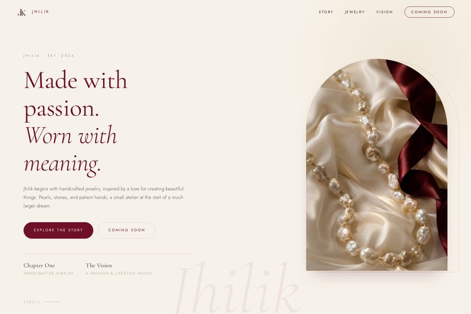

Jhilik
Brand launch website for a handcrafted pearl and stone jewelry label

Overview
Jhilik is a new brand that begins with handcrafted pearl and stone jewelry and plans to grow into a fashion and lifestyle house. Its site at jhilik.org introduces the founder's story and the first collection before the shop opens.
What the Site Does
- Story-led landing page: "It started with a love for making"
- The first chapter (jewelry) and the longer-term vision
- A coming-soon call to action ahead of the first collection
How I Built It
A single responsive page in plain HTML, CSS and JavaScript with the brand's own assets (photography and typography), designed to feel like the product: calm, warm and handmade. The repository has 18 commits, starting 2026-09-16.
- One HTML page plus an assets folder
- Typography and colour palette taken from the brand
- No backend: nothing to patch or pay for until the shop launches
Hosting and Delivery
The site is static and hosted on GitHub Pages with the client's custom domain. Cloudflare sits in front as the DNS provider and proxy (TLS, caching and DDoS protection on the free plan), and GitHub's Fastly CDN serves the files from its Toronto edge. Every push to the main branch redeploys the site through a GitHub Actions workflow.
Domain Email
Mail for the domain is set up in DNS. Incoming mail is handled by Cloudflare Email Routing (MX records on route1-3.mx.cloudflare.net) and forwarded to a real inbox. Outgoing mail goes through the Brevo SMTP relay and is signed with DKIM (the brevo1 and brevo2 keys), with an SPF record and a DMARC policy that sends aggregate reports, so messages from the domain authenticate and land in inboxes instead of spam.
Search and AI Discoverability
Search basics are in place (title, description and robots.txt); structured data will come with the product pages.
How a Visit Works
- A visitor arrives from social media or a link
- They read the brand story and see the first pieces
- They come back when the collection launches
What Is Next
- Product pages with Product structured data when the first collection is ready
- An online shop or order form, sending confirmations through the authenticated domain email
Frequently Asked Questions
What is jhilik.org built with?
A static HTML, CSS and JavaScript page on GitHub Pages, with Cloudflare for DNS and protection.
Can Jhilik send email from its own domain?
Yes. Outgoing mail goes through the Brevo SMTP relay with DKIM, SPF and DMARC, and incoming mail is forwarded by Cloudflare Email Routing.